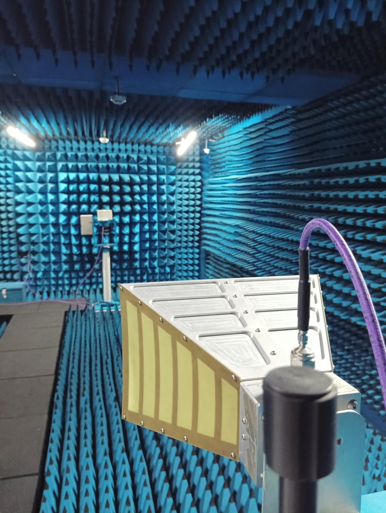
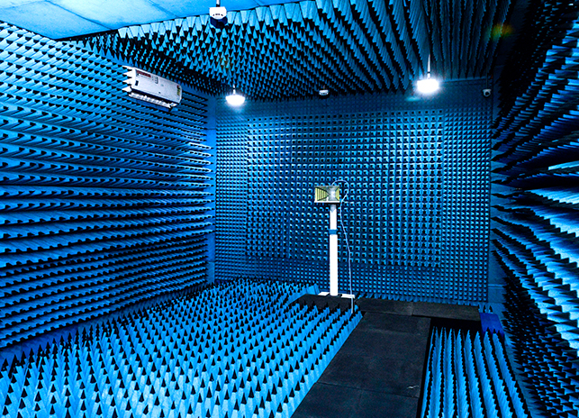
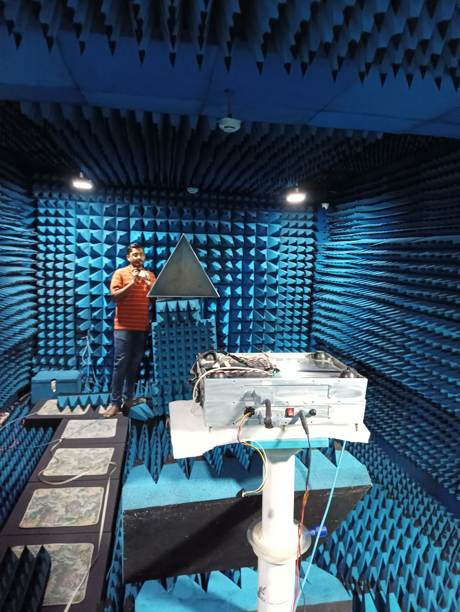
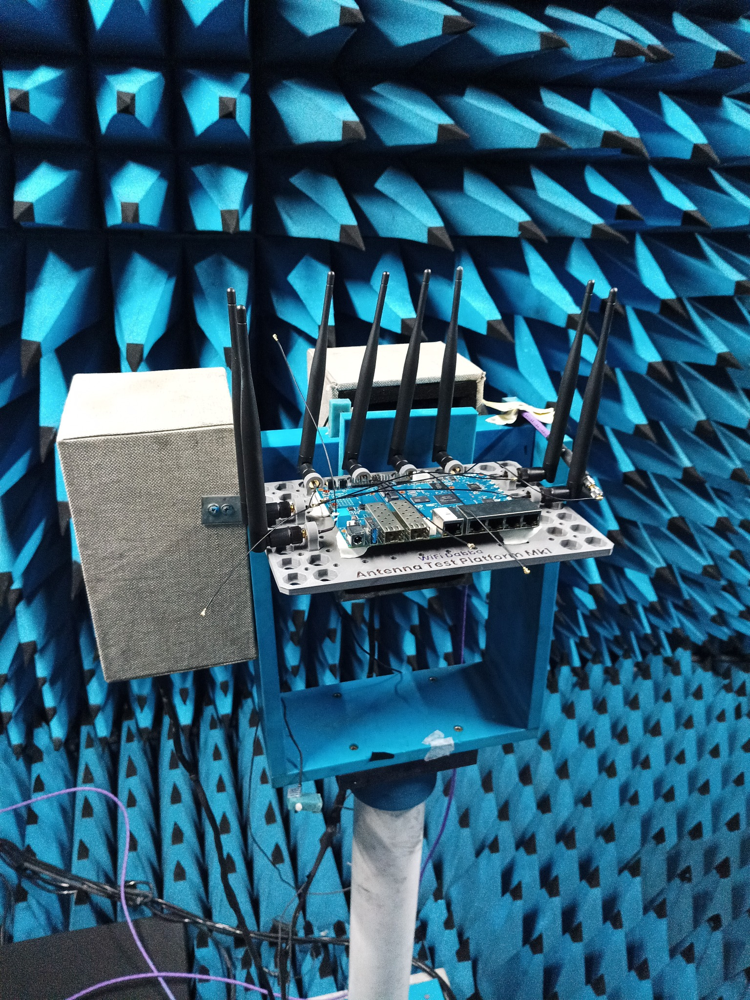
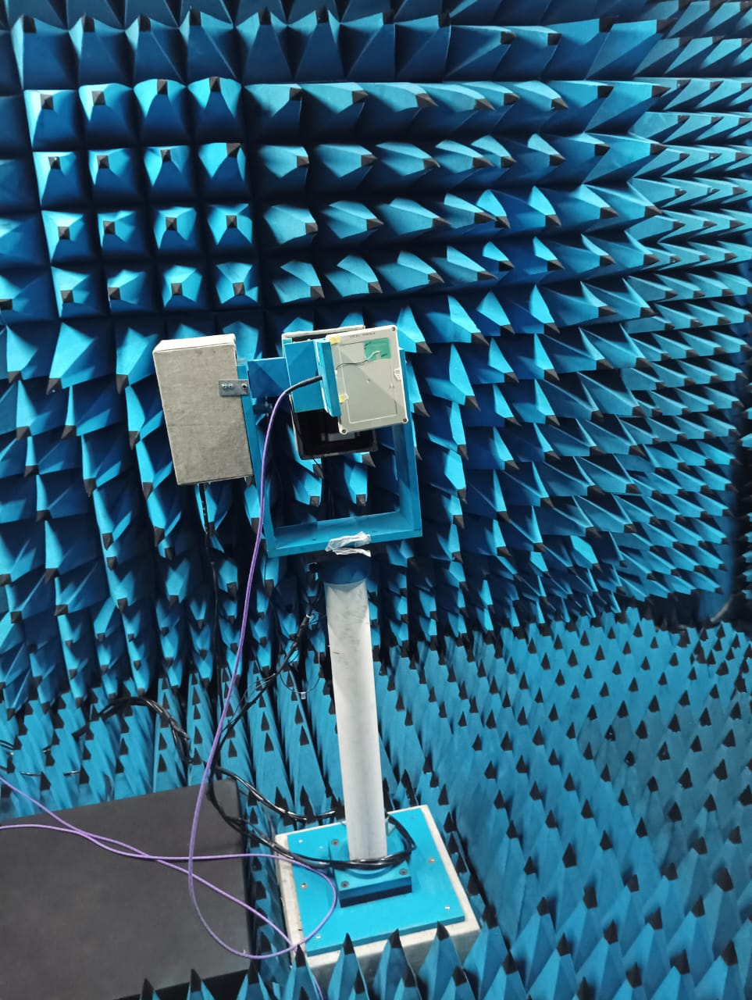

Research across antennas, metamaterials, sustainable microwave materials, RF measurements, satellite technology and AI.

Research in multiband and broadband antenna systems, MIMO configurations, planar antennas, PIFA structures, circular polarisation and antenna systems for wireless, railway and satellite communication applications.
Design and analysis of engineered electromagnetic structures, metamaterial-based sensors, metasurfaces and electromagnetic surfaces for tailored wave interaction and sensing applications.
Exploration and characterisation of organic and composite materials for microwave absorbers and functional substrates, including sustainable material approaches.

RF measurement, microwave characterisation, antenna testing, dielectric assessment and experimental validation of electromagnetic designs.

Antenna systems and RF technologies relevant to satellite communication, payload development and space-related engineering applications.
Satellite image processing and machine-learning approaches for Earth observation, environmental monitoring and sustainable development indicators.
Research related to 5G and future wireless communication, railway communication systems, smart connectivity and RF system integration.
The RF and Microwave Research Laboratory at CHRIST (Deemed to be University), Bengaluru, supports research, experimental validation and industry-oriented consultancy in antenna engineering, RF and microwave technologies.

Confirm current equipment availability and operational status before publishing service claims.
